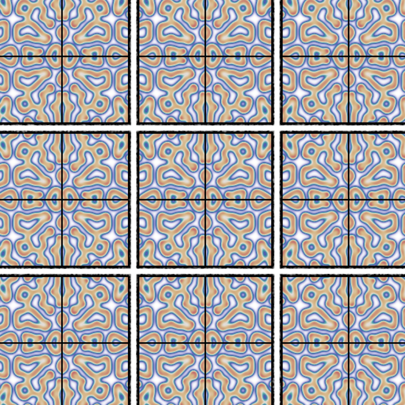
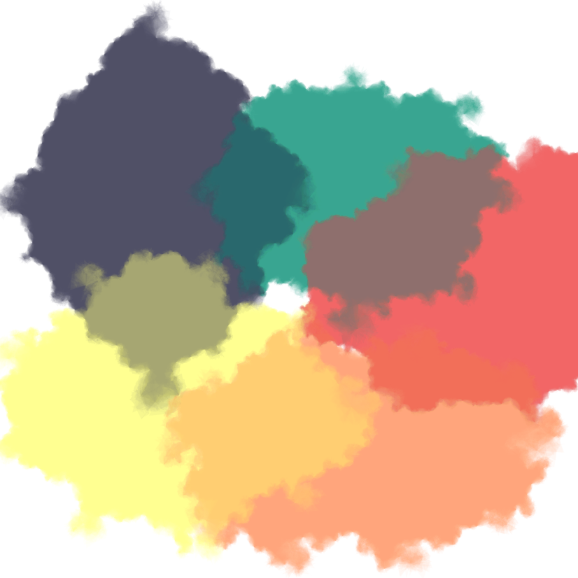
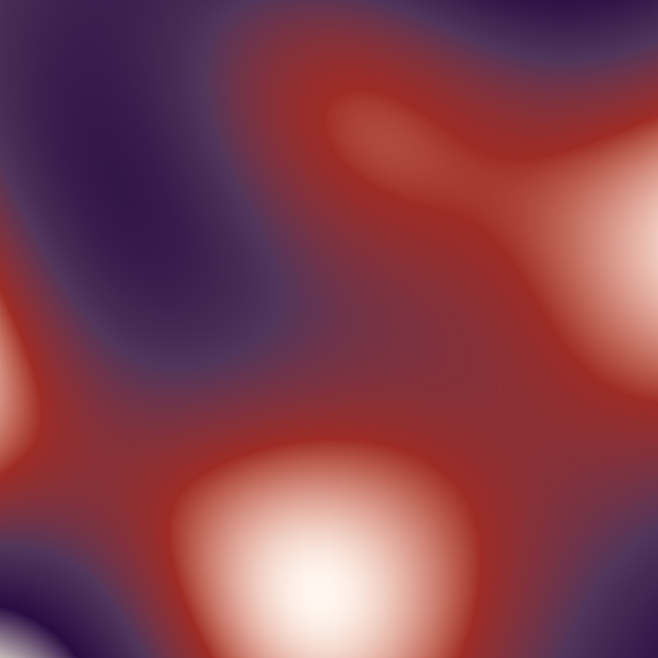
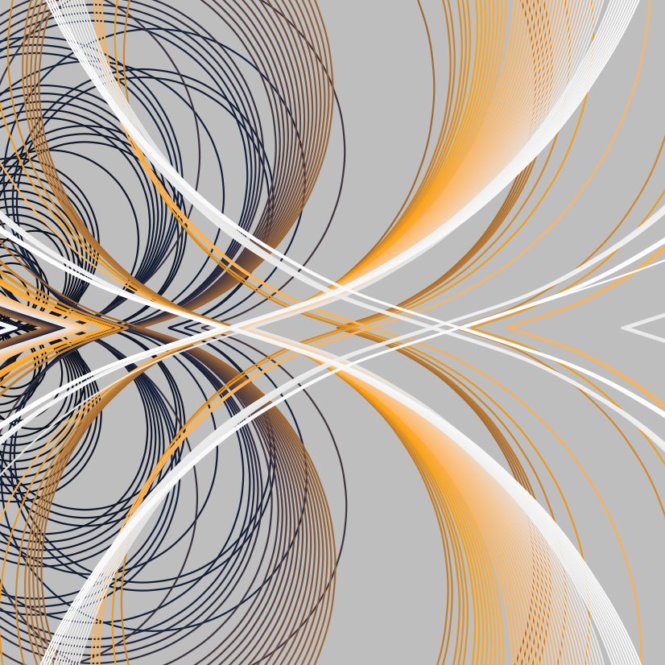

![]()
# load packages
# use install.packages("PACKAGE NAME") if these aren't already installed locally
library(tidyverse)
library(aRtsy)
library(generativeart)Generating Art in R
Data Viz
R
This demo outlines easy ways to generate art in R using random parameter formulas.
Today I want to combine two of hobbies of mine: programming and art. This demo will use two packages available for R, generativeart and aRtsy. Using these packages, I can create unique images using formulas and random parameters. Let’s see what happens!
More information about the generativeart package can be found here, and more information about the aRtsy package can be found here.
generativeart
Let’s start off with the generativeart package. I need to define an image path to save my generated images. I can also set up a logfile spreadsheet to keep track of the images I generate, their formulas, and the random seeds that determine the random numbers in the formula.
# set up image path
IMG_PATH <- "./images/"
# set up logfiles
LOGFILE_PATH <- "./logfile.csv"# include a specific formula
my_formula <- list(
x = quote(runif(1, -1, 1) * x_i^2 - sin(y_i^5)),
y = quote(runif(1, -1, 1) * y_i^3 - cos(x_i^2))
)
# call the main function to create an image with a polar coordinate system
generate_img(formula = my_formula, nr_of_img = 1, polar = TRUE,
filetype = "png", color = "white", background_color = "black")After trying a variety of formulas, here are some of my favorites created:
aRtsy
Now that we’ve explored generativeart, let’s dive into aRtsy. This package includes an impressive number of functions with the goal of making generative art accessible, standardized, and fun. Because render times in R can be quite long, I’ll save each of these artworks using the saveCanvas() function and display the rendered image below each code chunk. For each artwork, I played around with the seed number until I got a result/pattern I liked.
# define some palettes to use (thanks coolers.co!)
palette1 <- c("#1b998b","#2d3047","#fffd82","#ff9b71","#e84855")
palette2 <- c("#4357ad","#48a9a6","#e4dfda","#d4b483","#c1666b")
palette3 <- c("#fff8f0","#9e2b25","#51355a","#2a0c43","#f5f8de")
palette4 <- c("#c5fffd","#88d9e6","#8b8bae","#526760","#374b4a")
palette5 <- c("#000000","#14213d","#fca311","#e5e5e5","#ffffff")# decorative tiles
set.seed(100)
artwork <- canvas_tiles(colors = palette2,
background = "white",
size = 3,
col.line = "black")
saveCanvas(artwork,
filename = "./images/tiles.png")
# watercolor
set.seed(200)
artwork <- canvas_watercolors(colors = palette1,
background = "white",
layers = 50,
depth = 2,
resolution = 200)
saveCanvas(artwork,
filename = "./images/watercolor.png")
# blacklights
set.seed(5)
artwork <- canvas_blacklight(colors = palette3,
n = 500)
saveCanvas(artwork,
filename = "./images/blacklight.png")
# fractal
set.seed(200)
artwork <- canvas_mandelbrot(colors = palette5,
iterations = 200,
zoom = 2,
set = "julia")
saveCanvas(artwork,
filename = "./images/fractal.png")# Recamán's sequence
set.seed(50)
artwork <- canvas_recaman(colors = palette5,
background = "grey",
iterations = 300,
start = 15,
angle = 0,
size = 0.25,
closed = TRUE,
curvature = 10)
saveCanvas(artwork,
filename = "./images/recaman.png")
# mesh
set.seed(10)
artwork <- canvas_mesh(colors = c("black","lightgrey"),
background = "#450159",
transform = "svm")
saveCanvas(artwork,
filename = "./images/mesh.png")# flow fields
set.seed(10)
artwork <- canvas_flow(colors = palette4,
background = "lightgrey",
lwd = 0.5,
lines = 1500,
iterations = 200,
outline = "circle")
saveCanvas(artwork,
filename = "./images/flow.png")